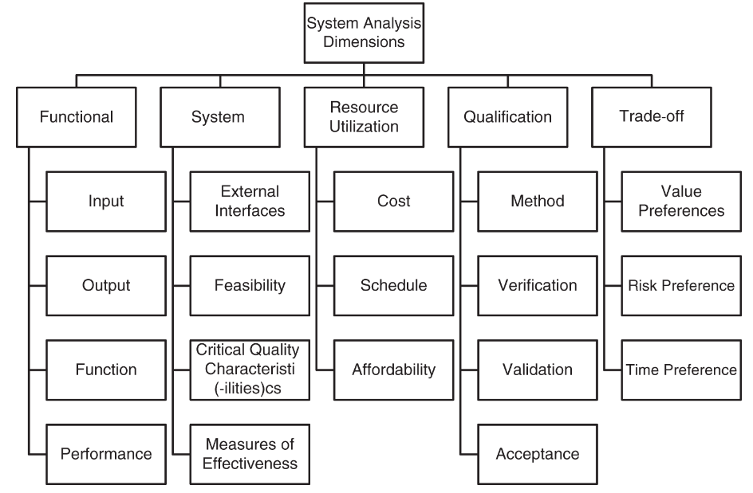

class: center, middle # CSEP Study Week 7 --- ## The story so far * Chapter 2 of the SEHB5 is all about the System Life Cycle * Section 2.4 is all about System Life Cycle Processes * Section 2.3.5 delves into Technical Processes * 2.3.5.1 Business or Mission Analysis Process * 2.3.5.2 Stakeholder Needs and Requirements Definition Process * 2.3.5.3 System Requirements Definition Process * 2.3.5.4 System Architecture Definition Process * 2.3.5.5 Design Definition Process --- ## 2.3.5.6 The System Analysis Process The purpose of the System Analysis process is to provide a rigorous basis of data and information for technical understanding to aid decision‐making and technical assessments across the life cycle. -- ISO/IEC/IEEE 15288 --- ### System Analysis Process Approaches Typical modeling approaches include: * MBSE * functional * structural * behavioral modeling * mathematical analysis * probabilistic and statistical modeling * simulation * other techniques to represent the relationships among the variables and to perform sensitivity analysis of the allowable range of values for the variables across all life cycle stages. see Section 3.2.1. --- ### System Analysis Dimensions  --- ### System Analysis IPO Diagram --- ## 2.3.5.7 The Implementation Process [6.4.7.1] The purpose of the Implementation process is to realize a specified system element. -- ISO 15288 The Implementation process creates the system element per that element’s description (concepts, requirements, architecture, design, including interfaces). Note that this process does not only occur during the production stage of the life cycle, but has activities in the other stages to ensure the element can be produced and to prepare for the production stage or other stages --- ### The Implementation Process IPO diagram --- ## 2.3.5.8 The Integration Process [6.4.8.1] The purpose of the Integration process is to synthesize a set of system elements into a realized system that satisfies the system requirements. * The focus of integration is the combination of system elements (hardware, software, and operational resources) that compose the SoI and verifying the correctness of the static and dynamic aspects of interfaces between, and interaction among, the implemented system elements. * The Integration process works closely with the Verification and Validation (V&V) processes. --- ### Integration IPO Diagram --- ## 2.3.5.9 Verification Process [6.4.9.1] The purpose of the Verification process is to provide objective evidence that a system, system element, or artifact fulfills its specified requirements and characteristics. * The Verification process can be applied to any engineering artifact, entity, or information item that has contributed to the definition and realization of the SoI * The Verification process provides objective evidence with an acceptable degree of confidence to confirm: * Artifact or Entity has been made in accord with requirements and characteristics. * No fault has been introduced at any time. * That evidence will be created to detect anomalies. --- ### Verification Process Details <img src="verification_details.png" width="600px"> --- ### Verification Process IPO --- ## 2.3.5.10 Transition Process [6.4.10.1] The purpose of the Transition process is to establish a capability for a system to provide services specified by stakeholder requirements in the operational environment. The Transition process installs a SoI into its operational and maintenance environment. This process makes the SoI an integral part of the acquiring organization systems, business processes, and capabilities so the organization starts to benefit from using and sustaining the system’s services. Transition may identify system requirements and design gaps. It may also drive changes, augmenting the initial stakeholder and system requirements. --- ### Transition Process IPO diagram --- ## 2.3.5.11 Validation Process [6.4.11.1] The purpose of the Validation process is to provide objective evidence that the system, when in use, fulfills its business or mission objectives and stakeholder needs and requirements, achieving its intended use in its intended operational environment. --- ### Validation Process Details --- ### Validation Process Input-Output --- ## 2.3.5.12 Operation Process [6.4.12.1] The purpose of the Operation process is to use the system to deliver its services. The Operation process focuses on delivering services provided by the system for the benefit of the operating organization. This process is often concurrent with the Maintenance process of sustaining the system’s services. During Operation, the SoI functions as an integral part of the operating organization. The SoI contributes to the Business or Mission Analysis process by cooperating with human operators and diverse interfacing systems. Operation may identify the system requirements and design gaps. It may also drive changes, augmenting the initial stakeholder and system requirements. --- ### Operation IPO <img src="ipo-diag-operation.svg" width="300px"> --- ## 2.3.5.13 Maintenance Process [6.4.13] The purpose of the Maintenance process is to sustain the capability of the system to provide a service. The Maintenance process focuses on sustaining the system’s ability to provide services for the operating organization’s benefit. This process is often concurrent with the Operation process of delivering the system’s services. Maintenance includes the activities to provide operations support, logistics, and material management to sustain satisfactory quality, performance, and availability of the system’s services. Maintenance may identify requirements and design gaps. It may also drive changes in the SoI, augmenting the initial stakeholder and system requirements. --- ### Maintenance IPO --- ## 2.3.5.14 Disposal Process [6.4.14.1] The purpose of the Disposal process is to end the existence of a system element or system for a specified intended use, appropriately handle replaced or retired elements, appropriately handle any waste products, and to properly attend to identified critical disposal needs. Disposal strategy and design considerations are updated throughout the system life cycle in response to changes in applicable laws, regulations, and policy. The ISO 14000 (2015) series includes standards for environmental management systems and life cycle assessment. --- ### Disposal IPO